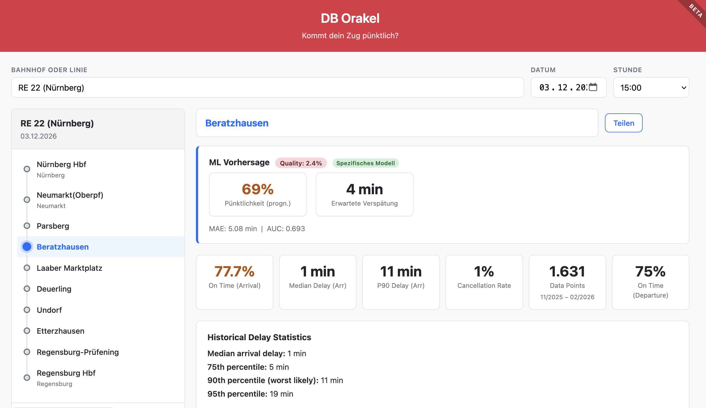
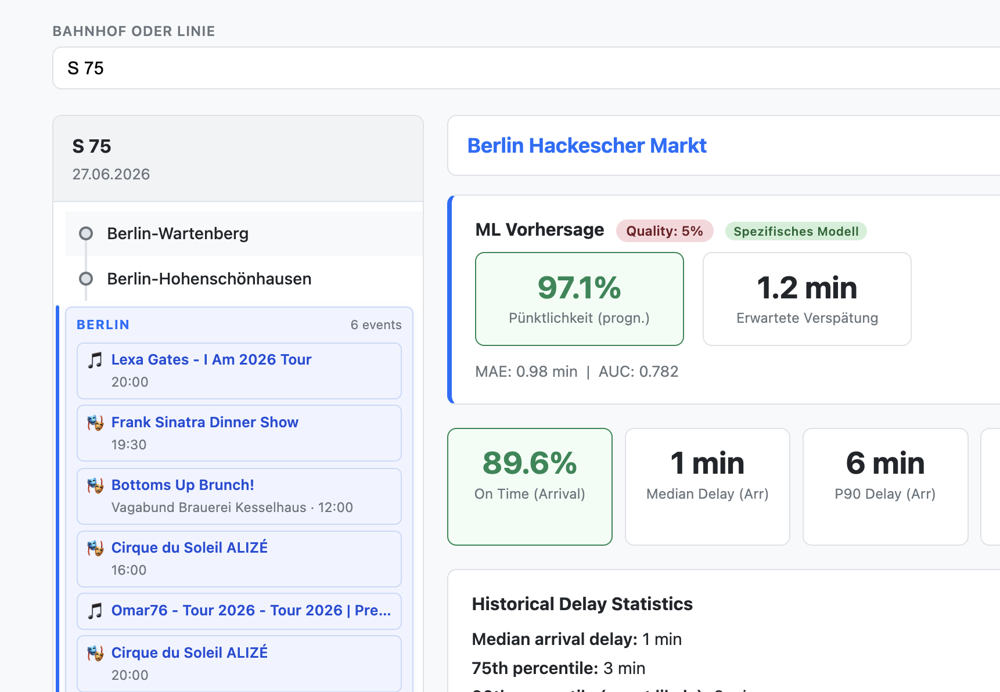

Mich hat neulich jemand auf https://bahn.bet/ gestoßen, eine Webseite, auf der man auf die Ankunftgszeiten von Zügen der Deutschen Bahn wetten kann.
“Genial” - dachte ich mir! Warum bin ich nicht selbst darauf gekommen? Und dann hab ich mal ein bisschen recherchiert und herausgefunden, dass Piet Brömmel die die Verspätungen von Zügen der Deutschen Bahn fein säuberlich dokumentiert. Auf huggingface gibt es dazu die passende Zeitreihe!
Und da ich ausgewiesener DB-Fan bin (unironisch tatsächlich sogar, erinnert sich noch jemand an nickets.de ?), hab ich überlegt, ob ich da nicht anknüpfen kann.
Herausgekommen ist das “ DB Orakel ”:

Im Prinzip ist die Seite schnell erklärt: Du suchst dir einen Bahnhof heraus und einen Zug, der an diesem Bahnhof zu einem bestimmten Datum anhält und erhältst eine Wahrscheinlichkeit, wie pünktlich der Zug wohl sein wird.
Das Ganze nutzt nicht nur die historischen Ankunftszeiten, sondern auch Wetterdaten, Preise für Kraftstoffe, Tageszeit und Wochentag sowie die Ferienzeiten. Und als Bonus wird dir angezeigt, ob in der jeweiligen Stadt gerade ein größeres Event stattfindet:

Zusammenfassung
DB Orakel erklärt, ob dein Zug zu spät kommt
Hauptthemen: Web 3.0 Metaverse Blockchain Bitcoin Cryptocurrency NFT Decentralization Cryptography
Schwierigkeitsgrad: beginner
Lesezeit: ca. 20 Minuten